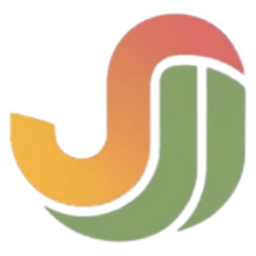
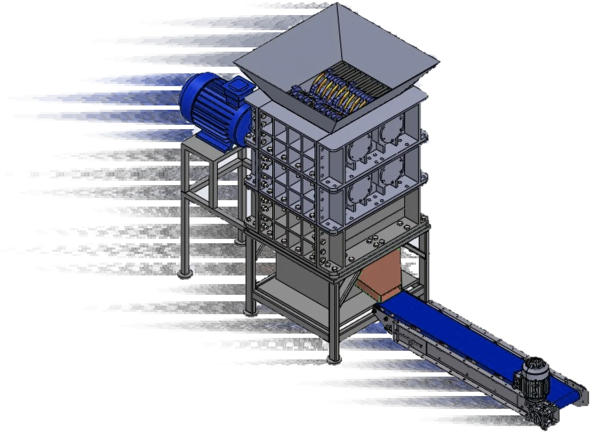
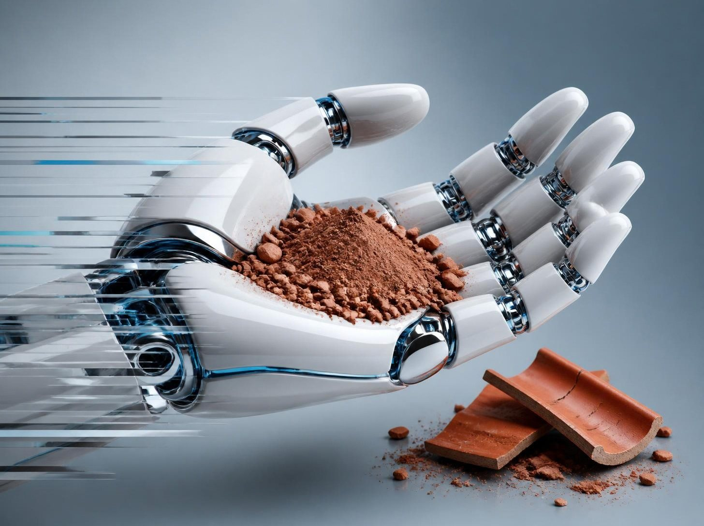

Resíduo cerâmico viraChamote
Tecnologia que tritura telhas e tijolos reprovados e devolve o material à produção.

JubartechReciclagem cerâmicaTecnologia que tritura telhas e tijolos reprovados e devolve o material à produção.
O mercado
Cerâmica vermelha no Cariri
O Arranjo Produtivo Local de Cerâmica Vermelha da Região Metropolitana do Cariri depende muito de argila virgem e descarta todos os dias peças defeituosas, um passivo ambiental que pode virar chamote.
Onde estão as 17 olarias
O gargalo dos moinhos tradicionais
Os moinhos de martelos do mercado foram feitos para indústrias de grande porte. Custam de R$ 28.000 a R$ 85.000 e usam motores de 15 a 30 CV, com contas de energia inviáveis para as micro e pequenas olarias do Cariri.
Proposta de valor
Por que o Eco‑Moedor Cerâmico
Menos custo, menos energia
Equipamento mais de R$ 10 mil mais barato que os moinhos tradicionais, cerca de 66% menos energia e R$ 11,98 de economia por tonelada processada.
Peças mais resistentes
Telhas e blocos com menos trincas e absorção de água controlada.
Economia circular local
Uma solução viável e sob medida para o APL de cerâmica do Cariri.
O protótipo
Eco-Moedor Cerâmico

Viabilidade
Mais barato que argila nova
Custo por tonelada de matéria-prima
Retorno direto na massa
Extrair e transportar argila virgem custa cerca de R$ 17,50 por tonelada. Reprocessar o chamote dentro da própria olaria com o Eco-Moedor Cerâmico custa cerca de R$ 5,75.
Valores estimados a partir do protótipo em validação.
Ciência dos materiais
Chamote que reforça a peça
Ensaios experimentais e a literatura de cerâmica tradicional indicam que o chamote na faixa granulométrica certa funciona como elemento estrutural e estabilizador da massa.
Incorporação ótima de 5%
Adicionar 5% de chamote em massa na argila virgem aumenta a resistência mecânica depois da queima (1000 °C) e reduz a absorção de água.
Faixa granulométrica de 18 a 70 mesh
A distância controlada entre os rolos evita moer demais e mantém os grãos no tamanho ideal para o empacotamento.
Menos microtrincas
Reduz a diferença de retração durante a secagem e diminui a quebra de telhas e tijolos no forno.
Saúde e ergonomia (NR-15)
A baixa rotação reduz o ruído e a poeira de sílica no ar, ajudando a prevenir doenças respiratórias ocupacionais.
Nova receita na construção civil
Com granulometria controlada, as próprias olarias podem vender o chamote a concreteiras da região, como adição pozolânica (filler) para concreto autoadensável de alta resistência.
Benefícios
O que era perda volta para a massa

Chamote · granulometria controladaEconomia circular
Economia de matéria-prima virgem
Reintrodução dos resíduos no processo produtivo
Aquisição mais acessível
Perguntas
O essencial
O que é o Eco-Moedor Cerâmico?
Um equipamento que tritura por compressão, refina e classifica telhas e tijolos reprovados, entregando chamote com granulometria controlada.
Vocês vendem a máquina?
Não. A Jubartech licencia a tecnologia para fabricantes de equipamentos, que produzem e vendem o Eco-Moedor Cerâmico.
Em que estágio está o projeto?
Protótipo em desenvolvimento, indo para o teste de conceito (TRL 3→4), com patente em depósito e apoio do Instituto SENAI de Tecnologia.